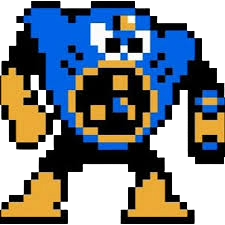

To beat Air Man in Mega Man 2, use the Leaf Shield (acquired from Wood Man), which kills him in only four hits. Stay close, activate the shield when he jumps, and fire when he is not protected by his tornadoes. If you lack the Leaf Shield, use the Mega Buster or Quick Boomerang while dodging.
Air Man is a notorious Robot Master from Mega Man 2 (DWN-010), designed by Dr. Wily to combat Mega Man with wind-based attacks. He is famous for his unusual design—a face on his chest—and for being a difficult, early-game boss in the "infamous trio" (with Wood Man and Heat Man). He attacks by shooting tornadoes.